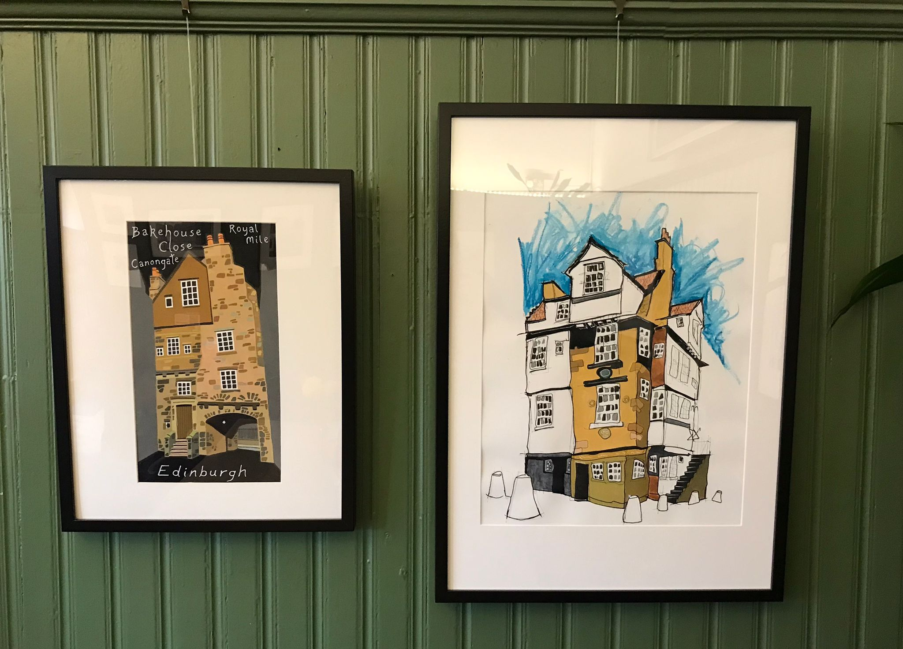
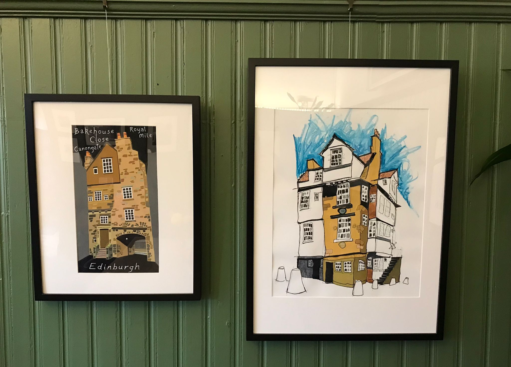

Current exhibitions:
Darren Ashcroft
I paint from my home on the Wirral which when you consider the subject of the vast majority of my work seems a bit confusing. However, I love Edinburgh and being a regular visitor to the city, I get the opportunity to complete studies and preliminary sketches in situ which I turn into finished works at home. When these run out, I resort to using quality shots from the many talented photographers operating in the city.
I was initially drawn to the architectural style of the Old Town; producing illustrative pictures, in gouache, of the notable buildings in the area. Recently I’ve ventured out and, taking inspiration from the Georgian architecture of the New Town, adopted a freer approach utilising collage, paint, pen, crayon and pencil.
I’m thoroughly enjoying this new process and artistic experimentation is now becoming the ‘norm’.
I hope you like what you see and please feel free to contact me if you require any additional information.
Darren

 
